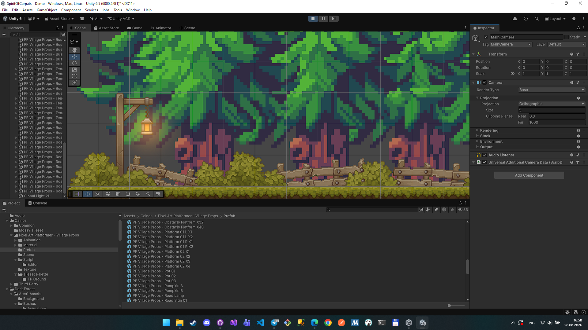

Перехід на Unity Engine
Рушій 30/08/2026
Прийнято рішення перенести проєкт на Unity Engine. Це дасть нам стабільнішу фізику, готову систему 2D-освітлення, зручніші інструменти для роботи зі спрайтами та анімаціями, а також спростить подальшу кросплатформенну збірку гри.
Чому відбувся перехід?
Ми зіткнулись з нестабільністю консольної розробки і проблемою з працюванням над асетами, графікою і всім іншим, що має бути в звичайній грі. Також дане рішення допомагає нам покращити якість самої гри.
Наразі команда переносить існуючі напрацювання — рух персонажа, локації та систему збережень — у нове середовище. Частина візуальних ефектів (світло, частинки, атмосфера лісу) вже виглядає краще, ніж на попередньому рушії.